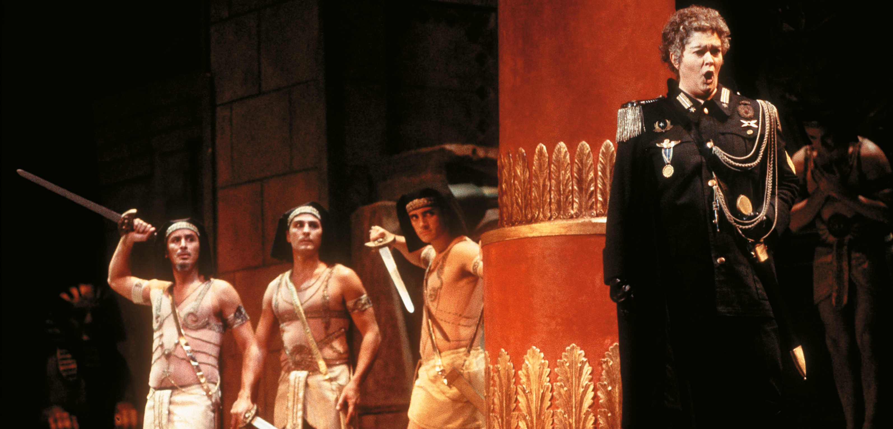

Opera
Look at the following image. What sort of musical work is this?

It is clear that this is a theatrical scene set in ancient times, with music playing and people singing. The image is from an opera scene, specifically Handel’s *Julius Caesar*.
| Opera is an extremely important genre of vocal music that emerged during this period, and it can be defined as a musical theatre production. The first opera in history is generally considered to be *Orfeo* by the composer Claudio Monteverdi, which premiered in 1607 and is based on the Greek myth of Orpheus and Eurydice. |
The structure of a Baroque opera consists mainly of:
- Overture: an opening instrumental piece that signals to the audience the start of the performance.
- Recitative: spoken sections in which the singers imitate the natural rhythm of speech to advance the plot.
- Arias: the lyrical and emotional heart of the work. They pause the dramatic action so that the soloist can express their deepest feelings with a magnificent display of virtuosity.
- Choruses: pieces in which the choir takes part to represent collective characters.
- Interludes: instrumental pieces that allowed for scene changes or dances.
WE LISTEN AND WE DON'T JUDGE: OPERA
Listen to the following excerpts from two operas: Pergolesi’s La Serva Padrona and Handel’s Julius Caesar in Egypt, and answer these two questions for each excerpt.
- Which type of piece, from those we have studied, do you think each one is?
- What characteristics have helped you to identify it?
🎧 Listening 3
🎧 Listening 4
🎧 Listening 5
Händel - Julius Caesar in Egypt
🎧 Listening 6